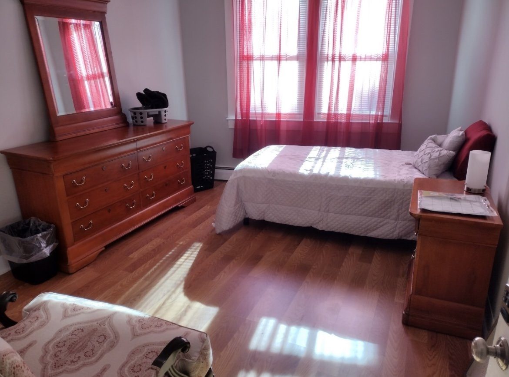
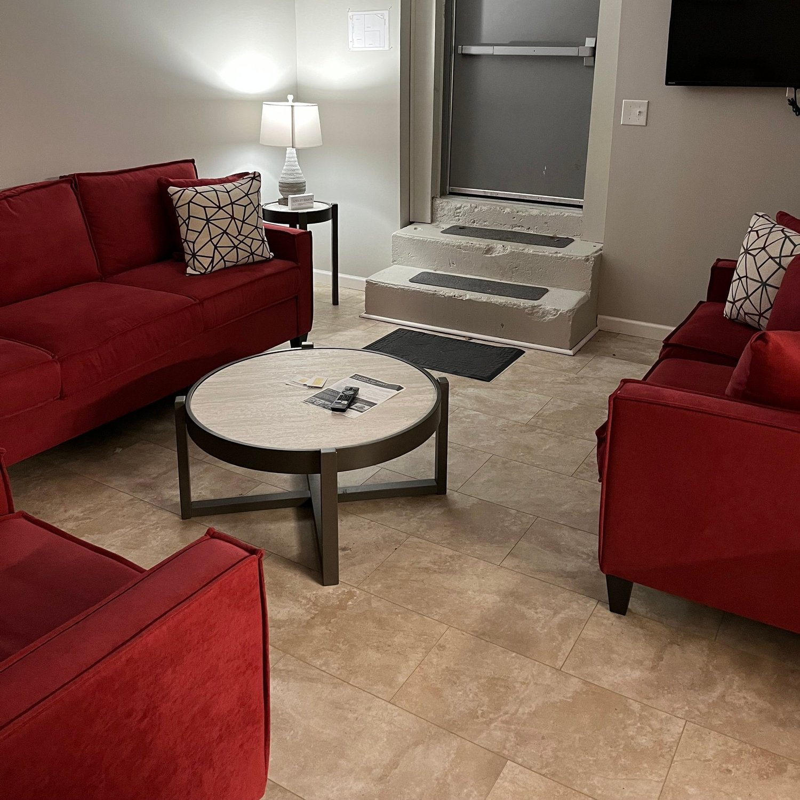
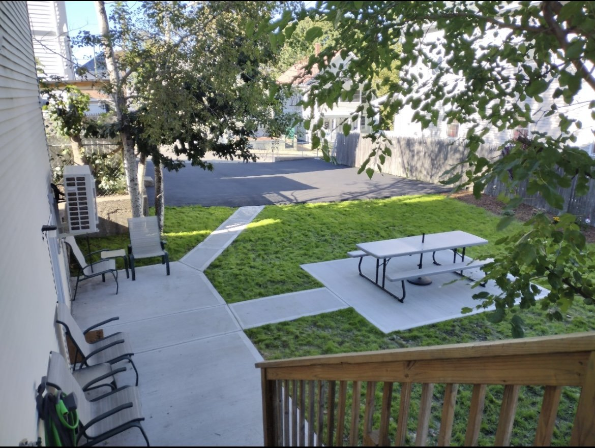

Foundations:
Women’s Reentry-Focused Transitional Housing
Sober Transitional Housing for Women with Criminal Records.
If you are serious about changing your life, this is the place for you. Part of the OpenDoors She Thrives Program (check out the video about the program here.)



We prioritize people coming from prison or with criminal records, completing residential treatment, DCYF referred and those working toward the goal of reunification.
Paid staff are on site 20 hours daily including a Program Director, Case Manager and House Monitors. This program is led and staffed by individuals that have overcome challenges with incarceration and addiction.
About Foundations
In 2022, OpenDoors opened the first transitional house specifically dedicated to helping women coming out of prison. The 14-bed program focuses on sober living during which formerly incarcerated women can create a fresh start. All those in transitional housing are expected to work, go to school or work actively towards their recovery and wellness.
At Foundations, we
Provide subsidized transitional housing, peer-recovery coaching and case management, and on-site therapy.
Provide other group and individual supportive services
How do I apply?
Call 401-942-STOP to register or call OpenDoors (401)-781-5808 ext. 1 to do an intake and learn about our other services
Email: intake@opendoorsri.org
Phone: 401-781-5808, ext. 1
Do I Need to Work to Live Here?
As this is a 6 Month Transitional Housing Program, you must be able to work towards permanent housing. This could be through employment or other sources of income, but all clients must be actively striving towards saving money and moving into permanent housing.